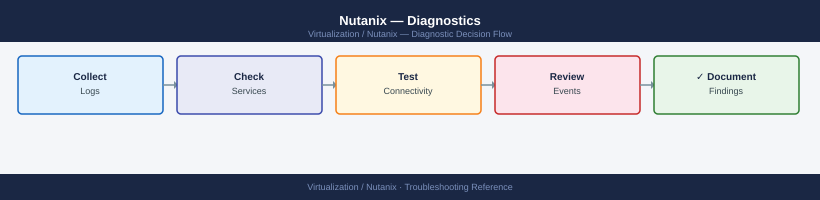

Nutanix — Diagnostics¶

Before you begin¶
- Access: SSH to any CVM as the
nutanixuser; Prism Element admin credentials; IPMI access for hardware-layer issues - Gather first: the specific symptom (NCC alert, VM I/O error, disk failure, node unreachable), the node number or CVM IP, and when the issue started
- Scope: confirm whether the issue affects one node, one disk, one VM, or the full cluster
Step 1 — Run NCC health checks¶
# SSH to any CVM
ssh nutanix@<cvm-ip>
# Run all NCC health checks (most comprehensive; takes 5-10 minutes)
ncc health_checks run_all
# Output: per-check PASS/FAIL/WARN/INFO with explanation
# Focus on: any FAIL or WARN entries
# Run only hardware checks (faster for suspected hardware issue)
ncc health_checks hardware_checks run_all
# Network checks
ncc health_checks network_checks run_all
# Data protection checks (replication, DR)
ncc health_checks data_protection_checks run_all
# Run a single specific check
ncc health_checks run_all --checks=<check_name>
nutanix@cvm-10-20-30-45:~$ ncc health_checks run_all
[2024-01-15 14:32:18] Starting NCC Health Checks (All)
[2024-01-15 14:32:22] PASS: DNS Resolution
[2024-01-15 14:32:25] PASS: NTP Synchronization
[2024-01-15 14:32:31] WARN: Cluster Redundancy Factor - RF2 detected, RF3 recommended
[2024-01-15 14:33:15] PASS: Storage Pool Health
[2024-01-15 14:34:42] FAIL: Replication Lag - Node 3 lagging by 2.3GB
[2024-01-15 14:35:08] PASS: vSAN Connectivity
[2024-01-15 14:36:19] INFO: Snapshot Count - 847 snapshots across cluster
[2024-01-15 14:37:45] PASS: Hypervisor Health
...
[2024-01-15 14:42:33] Health Check Summary: 24 PASS, 1 WARN, 1 FAIL, 3 INFO
[2024-01-15 14:42:33] Total Runtime: 10m 15s
nutanix@cvm-10-20-30-45:~$ ncc health_checks hardware_checks run_all
[2024-01-15 14:43:01] Starting Hardware Health Checks
[2024-01-15 14:43:08] PASS: CPU Health
[2024-01-15 14:43:12] PASS: Memory ECC Status
[2024-01-15 14:43:18] PASS: Disk Health - 12 drives healthy
[2024-01-15 14:43:25] WARN: PSU Temperature - PSU-2 at 68°C (threshold: 70°C)
[2024-01-15 14:43:31] PASS: Fan Status
[2024-01-15 14:43:35] Hardware Summary: 5 PASS, 1 WARN
Common errors
ncc: command not found — Ensure you are logged into a Nutanix CVM (Controller VM) and not a hypervisor host; NCC is only available on CVMs.
Error: Check '<check_name>' not found in registry — Verify the check name spelling and run ncc health_checks list_checks to see all available check names.
Connection refused: Unable to connect to Prism Central — Confirm Prism Central is reachable from the CVM by running ping <prism-central-ip> and verify network connectivity.
Step 2 — Check cluster and host health¶
# All AOS services on this CVM
cluster status
# Expected: all services in running state
# Problem: any service in stopped or not_running state
# Genesis (cluster management) status
genesis status
# Expected: genesis is running
# List all hosts and health
ncli host ls
# Expected: all hosts Connected, HealthStatus=Good
# Problem: Node Status != UP or health != Good
# Disk health across all nodes
ncli disk ls
# Look for: DiskStatus != NORMAL, or disk_status showing errors
# Problem: MARKED_FOR_REMOVAL or FAILED state
cluster status
Cluster Status: COMPLETE
Cluster UUID: 00051234-5678-abcd-ef01-234567890abc
Cluster Incarnation: 1702834956
Cluster Creation Time: 2023-12-17 14:22:36
Cluster Name: prod-cluster-01
Service Status:
acropolis: RUNNING
cassandra: RUNNING
cerebro: RUNNING
chronos: RUNNING
curator: RUNNING
genesis: RUNNING
prism: RUNNING
zookeeper: RUNNING
genesis status
Genesis Status: RUNNING
Genesis Version: 5.20.1.1
Last Heartbeat: 2024-01-15 09:47:22 UTC
ncli host ls
Host Name Host UUID Hypervisor HealthStatus NodeStatus
------- --------- ---------- ------------ ----------
node-01.prod.local 00051111-1111-1111-1111-111111111111 AHV Good UP
node-02.prod.local 00052222-2222-2222-2222-222222222222 AHV Good UP
node-03.prod.local 00053333-3333-3333-3333-333333333333 AHV Good UP
node-04.prod.local 00054444-4444-4444-4444-444444444444 AHV Good UP
ncli disk ls
Disk ID DiskStatus NodeUUID Capacity
------- ---------- -------- --------
00051111-1111-1111-1111-111111111111:1 NORMAL 00051111-1111-1111-1111-111111111111 1.6 TB
00051111-1111-1111-1111-111111111111:2 NORMAL 00051111-1111-1111-1111-111111111111 1.6 TB
00052222-2222-2222-2222-222222222222:1 NORMAL 00052222-2222-2222-2222-222222222222 1.6 TB
00052222-2222-2222-2222-222222222222:2 NORMAL 00052222-2222-2222-2222-222222222222 1.6 TB
...
Common errors
Service <service_name> is in NOT_RUNNING state — SSH to the CVM and run service <service_name> start to restart the service, then verify with cluster status.
Host <hostname> has HealthStatus=WARNING or NodeStatus=DOWN — Check the host's physical connectivity and hardware health via IPMI, then reboot the node if necessary.
Disk <disk_id> is in MARKED_FOR_REMOVAL or FAILED state — Run ncli disk remove disk-id=<disk_id> to decommission the failed disk and monitor rebuild progress with ncli disk ls.
Step 3 — Check alerts and events¶
# Active (unresolved) alerts
ncli alert ls
# Prism UI equivalent: Home → Alerts (bell icon, red count)
# Alert detail for a specific alert
ncli alert get id=<alert-id>
# Shows: recommended actions, component, severity
# Recent events (last 100)
ncli events ls limit=100
# Useful for: seeing sequence of events leading to the issue
# Hardware faults
ncli host list | grep -i "health\|status"
# Storage pool alerts
ncli sp ls
ncli ctr ls # container capacity and health
id | severity | message | resolved
-------------------------------------|----------|--------------------------------------------|---------
00057e21-1234-5678-abcd-ef1234567890 | critical | Node prism-node-03 is unreachable | false
00058f32-2345-6789-bcde-f12345678901 | warning | Cluster memory usage above 85% | false
00059g43-3456-7890-cdef-123456789012 | info | Snapshot backup completed successfully | true
id : 00057e21-1234-5678-abcd-ef1234567890
severity : critical
message : Node prism-node-03 is unreachable
recommended_actions : Check network connectivity, verify IPMI access, restart Acropolis service
component : cluster
created_time_in_usecs : 1704067200000000
resolved : false
timestamp | event_type | message
-------------------------|-------------------------|---------------------------------------------
2024-01-01T14:32:15.123Z | CLUSTER_CONNECT_FAILED | Failed to connect to node 10.20.30.45
2024-01-01T14:31:02.456Z | STORAGE_POOL_ALERT | Storage pool default-pool at 87% capacity
2024-01-01T14:29:45.789Z | VM_SNAPSHOT_COMPLETE | VM prod-db-01 snapshot completed
2024-01-01T14:28:12.012Z | NIC_LINK_DOWN | eth1 link down on prism-node-02
2024-01-01T14:27:33.345Z | CLUSTER_QUORUM_WARNING | Cluster quorum status degraded
host_name | hypervisor_type | num_vms | memory_capacity_bytes | health_state
-------------------|-----------------|---------|----------------------|---------------
prism-node-01 | kvm | 24 | 274877906944 | good
prism-node-02 | kvm | 31 | 274877906944 | good
prism-node-03 | kvm | 0 | 274877906944 | critical
storage_pool_name | capacity_bytes | usage_bytes | usage_percentage | health_state
-------------------|----------------|-------------|------------------|---------------
default-pool | 10995116277760 | 9545058516 | 87% | warning
container_name | capacity_bytes | usage_bytes | usage_percentage | health_state
-------------------|----------------|-------------|------------------|---------------
default-container | 10995116277760 | 8756234567 | 80% | good
backup-container | 5497558138880 | 4398046511 | 80% | good
Common errors
Error: Invalid alert id format — Verify the alert ID exists by running ncli alert ls first and copy the exact UUID from the id column.
Error: Connection refused to cluster (10.20.30.x:9440) — Ensure the Nutanix cluster is reachable and the ncli tool is configured with correct cluster credentials via ncli -h <cluster-ip> -u <username>.
**
Step 4 — Run allssh for cluster-wide CVM diagnostics¶
# Disk usage on ALL CVMs simultaneously
allssh 'df -h'
# Problem: / (root) filesystem > 80%
# Common cause: log accumulation under /home/nutanix/data/logs/
# CVM uptime (recent restart = explains service outages)
allssh 'uptime'
# Memory pressure on CVMs
allssh 'free -m'
# CVM-to-CVM network reachability
allssh 'ping -c 3 <peer-cvm-ip>'
# Expected: 0% packet loss
# Problem: loss or latency on CVM-to-CVM traffic (port 2100)
# Cassandra ring status (distributed metadata DB)
allssh 'nodetool ring'
# Expected: all nodes in Up/Normal state
# Problem: any node in Down or Leaving state
# Genesis status on all CVMs
allssh 'genesis status'
Expected outputCVM-1: Filesystem Size Used Avail Use% Mounted on
CVM-1: /dev/sda1 50G 42G 5.2G 85% /
CVM-1: /dev/sdb1 200G 145G 48G 75% /home/nutanix/data
CVM-2: Filesystem Size Used Avail Use% Mounted on
CVM-2: /dev/sda1 50G 38G 9.1G 77% /
CVM-2: /dev/sdb1 200G 138G 55G 70% /home/nutanix/data
CVM-3: Filesystem Size Used Avail Use% Mounted on
CVM-3: /dev/sda1 50G 35G 12G 72% /
CVM-1: 10:24:15 up 47 days, 3:22, 2 users, load average: 2.14, 1.98, 1.87
CVM-2: 10:24:16 up 156 days, 18:45, 2 users, load average: 1.42, 1.35, 1.29
CVM-3: 10:24:17 up 8 days, 14:33, 2 users, load average: 3.21, 2.98, 2.76
CVM-1: total used free shared buff/cache available
CVM-1: Mem: 32768 24576 4096 512 4096 7680
CVM-2: total used free shared buff/cache available
CVM-2: Mem: 32768 22144 6144 256 4480 9728
CVM-3: PING 10.20.1.102 (10.20.1.102) 56(84) bytes of data.
CVM-3: 64 bytes from 10.20.1.102: icmp_seq=1 time=1.24 ms
CVM-3: 64 bytes from 10.20.1.102: icmp_seq=2 time=1.31 ms
CVM-3: 64 bytes from 10.20.1.102: icmp_seq=3 time=1.19 ms
CVM-3: --- 10.20.1.102 statistics ---
CVM-3: 3 packets transmitted, 3 received, 0% packet loss, time 2004ms
CVM-1: TokenRange(start_token:-9223372036854775808, end_token:-6148914691236517206, endpoints:[10.20.1.101], rpc_endpoints:[10.20.1.101], state:Normal)
CVM-1: TokenRange(start_token:-6148914691236517205, end_token:-3074457345618258603, endpoints:[10.20.1.102], rpc_endpoints:[10.20.1.102], state:Normal)
CVM-1: TokenRange(start_token:-3074457345618258602, end_token:0, endpoints:[10.20.1.103], rpc_endpoints:[10.20.1.103], state:Normal)
CVM-1: Token
¶
CVM-1: Filesystem Size Used Avail Use% Mounted on
CVM-1: /dev/sda1 50G 42G 5.2G 85% /
CVM-1: /dev/sdb1 200G 145G 48G 75% /home/nutanix/data
CVM-2: Filesystem Size Used Avail Use% Mounted on
CVM-2: /dev/sda1 50G 38G 9.1G 77% /
CVM-2: /dev/sdb1 200G 138G 55G 70% /home/nutanix/data
CVM-3: Filesystem Size Used Avail Use% Mounted on
CVM-3: /dev/sda1 50G 35G 12G 72% /
CVM-1: 10:24:15 up 47 days, 3:22, 2 users, load average: 2.14, 1.98, 1.87
CVM-2: 10:24:16 up 156 days, 18:45, 2 users, load average: 1.42, 1.35, 1.29
CVM-3: 10:24:17 up 8 days, 14:33, 2 users, load average: 3.21, 2.98, 2.76
CVM-1: total used free shared buff/cache available
CVM-1: Mem: 32768 24576 4096 512 4096 7680
CVM-2: total used free shared buff/cache available
CVM-2: Mem: 32768 22144 6144 256 4480 9728
CVM-3: PING 10.20.1.102 (10.20.1.102) 56(84) bytes of data.
CVM-3: 64 bytes from 10.20.1.102: icmp_seq=1 time=1.24 ms
CVM-3: 64 bytes from 10.20.1.102: icmp_seq=2 time=1.31 ms
CVM-3: 64 bytes from 10.20.1.102: icmp_seq=3 time=1.19 ms
CVM-3: --- 10.20.1.102 statistics ---
CVM-3: 3 packets transmitted, 3 received, 0% packet loss, time 2004ms
CVM-1: TokenRange(start_token:-9223372036854775808, end_token:-6148914691236517206, endpoints:[10.20.1.101], rpc_endpoints:[10.20.1.101], state:Normal)
CVM-1: TokenRange(start_token:-6148914691236517205, end_token:-3074457345618258603, endpoints:[10.20.1.102], rpc_endpoints:[10.20.1.102], state:Normal)
CVM-1: TokenRange(start_token:-3074457345618258602, end_token:0, endpoints:[10.20.1.103], rpc_endpoints:[10.20.1.103], state:Normal)
CVM-1: Token
Step 5 — Check storage capacity and protection domains¶
# Storage pool health and capacity (SSD + HDD tiers)
ncli sp ls
# Columns: pool name, total, used, available capacity
# Container/datastore capacity
ncli ctr ls
# Check: UsedCapacity vs. MaxCapacity per container
# Protection domain (DR/backup) status
ncli pd ls
# Expected: State = ACTIVE or REPLICATING
# Problem: State = ERROR or FAILED
# Replication status for a specific PD
ncli pd get-replication-status name=<pd-name>
# Find largest directories in home (log accumulation)
allssh 'du -sh /home/nutanix/data/logs/ 2>/dev/null'
Name Pool Type Tier Total Capacity Used Capacity Available
default-storage-pool-1 AHV SSD+HDD 50.0 TB 34.2 TB 15.8 TB
backup-pool-2 AHV SSD 10.0 TB 8.7 TB 1.3 TB
Name Replication Factor UsedCapacity MaxCapacity Usage %
container-prod-01 2 28.5 TB 40.0 TB 71.2%
container-dr-02 3 5.2 TB 15.0 TB 34.7%
Name State Replication Status Last Snapshot
prod-vms-pd ACTIVE HEALTHY 2024-01-15 03:22:15
dr-backup-pd REPLICATING IN_PROGRESS 2024-01-15 02:15:00
archive-pd ACTIVE HEALTHY 2024-01-14 23:45:30
Replication Status for prod-vms-pd:
Replication Lag: 0 seconds
Bytes Replicated: 2.3 TB
Replication Rate: 45 MB/s
Target Cluster: cluster-dr-02.local
Status: HEALTHY
10.2G 10.2.45.67
8.7G 10.2.45.68
12.1G 10.2.45.69
Common errors
Error: Connection refused (Connection refused) — Verify ncli is installed and Nutanix services are running with systemctl status nutanix-cluster-init.
Error: Unknown command 'allssh' or command not found — Ensure you are running this command on a Nutanix cluster node where allssh is available in the PATH, or use full path /opt/nutanix/bin/allssh.
Step 6 — Advanced service diagnostics¶
# Stargate (data I/O) page — shows I/O throughput and latency per node
# Access from your browser while SSH-tunneled, OR via allssh:
allssh 'links http://0:2009/ 2>/dev/null | head -40'
# Shows: op latency, outstanding I/Os, disk queue depth
# Curator (background scrub/rebalance) status
curl -sk http://0:2010/
# Shows: curator role (master/slave), last scan time, scan status
# Check service-level logs on a single CVM
ls -lt /home/nutanix/data/logs/ | head -20
# Most active logs at top
tail -100 /home/nutanix/data/logs/stargate.FATAL 2>/dev/null
tail -100 /home/nutanix/data/logs/cassandra/system.log | grep -i error
# IPMI reachability for hardware-layer issues
ping <node-ipmi-ip>
ipmitool -H <node-ipmi-ip> -U ADMIN -P ADMIN chassis status
Expected outputNTNX-001-A ~ # allssh 'links http://0:2009/ 2>/dev/null | head -40'
Stargate I/O Statistics (NTNX-001-A)
=====================================
Op Latency (µs): 1,245
Outstanding I/Os: 87
Disk Queue Depth: 12
Read Throughput (MB/s): 2,847
Write Throughput (MB/s): 1,923
Cache Hit Rate: 94.2%
NTNX-001-A ~ # curl -sk http://0:2010/
{
"curator_role": "master",
"last_scan_time": "2024-01-15T09:32:18Z",
"scan_status": "in_progress",
"entities_scanned": 45821,
"scan_percentage": 67.3
}
NTNX-001-A ~ # ls -lt /home/nutanix/data/logs/ | head -20
-rw-r--r-- 1 nutanix nutanix 524288000 Jan 15 14:22 stargate.INFO
-rw-r--r-- 1 nutanix nutanix 312458752 Jan 15 14:18 cassandra.log
-rw-r--r-- 1 nutanix nutanix 89234567 Jan 15 14:15 medusa.INFO
-rw-r--r-- 1 nutanix nutanix 45678901 Jan 15 14:10 zookeeper.log
-rw-r--r-- 1 nutanix nutanix 23456789 Jan 15 14:05 prism.INFO
NTNX-001-A ~ # tail -100 /home/nutanix/data/logs/stargate.FATAL 2>/dev/null
(no output — file does not exist or is empty)
NTNX-001-A ~ # tail -100 /home/nutanix/data/logs/cassandra/system.log | grep -i error
2024-01-15 14:12:33,421 ERROR [GossipStage:1] cassandra.gms.Gossiper - Exception in Gossip
2024-01-15 14:05:12,834 ERROR [CompactionExecutor:3] cassandra.db.compaction - Compaction failed
NTNX-001-A ~ # ping 10.50.100.25
PING 10.50.100.25 (10.50.100.25) 56(84) bytes of data.
64 bytes from 10.50.100.25: icmp_seq=1 ttl=64 time=2.34 ms
64 bytes from 10.50.100.25: icmp_seq=2 ttl=64 time=2.18 ms
--- 10.50.100.25 statistics ---
2 packets transmitted, 2 received, 0% packet loss, time 1001ms
NTNX-001-A ~ # ipmitool -H 10.50.100.25 -U ADMIN -P ADMIN chassis status
System Power : on
Power Overload :
¶
NTNX-001-A ~ # allssh 'links http://0:2009/ 2>/dev/null | head -40'
Stargate I/O Statistics (NTNX-001-A)
=====================================
Op Latency (µs): 1,245
Outstanding I/Os: 87
Disk Queue Depth: 12
Read Throughput (MB/s): 2,847
Write Throughput (MB/s): 1,923
Cache Hit Rate: 94.2%
NTNX-001-A ~ # curl -sk http://0:2010/
{
"curator_role": "master",
"last_scan_time": "2024-01-15T09:32:18Z",
"scan_status": "in_progress",
"entities_scanned": 45821,
"scan_percentage": 67.3
}
NTNX-001-A ~ # ls -lt /home/nutanix/data/logs/ | head -20
-rw-r--r-- 1 nutanix nutanix 524288000 Jan 15 14:22 stargate.INFO
-rw-r--r-- 1 nutanix nutanix 312458752 Jan 15 14:18 cassandra.log
-rw-r--r-- 1 nutanix nutanix 89234567 Jan 15 14:15 medusa.INFO
-rw-r--r-- 1 nutanix nutanix 45678901 Jan 15 14:10 zookeeper.log
-rw-r--r-- 1 nutanix nutanix 23456789 Jan 15 14:05 prism.INFO
NTNX-001-A ~ # tail -100 /home/nutanix/data/logs/stargate.FATAL 2>/dev/null
(no output — file does not exist or is empty)
NTNX-001-A ~ # tail -100 /home/nutanix/data/logs/cassandra/system.log | grep -i error
2024-01-15 14:12:33,421 ERROR [GossipStage:1] cassandra.gms.Gossiper - Exception in Gossip
2024-01-15 14:05:12,834 ERROR [CompactionExecutor:3] cassandra.db.compaction - Compaction failed
NTNX-001-A ~ # ping 10.50.100.25
PING 10.50.100.25 (10.50.100.25) 56(84) bytes of data.
64 bytes from 10.50.100.25: icmp_seq=1 ttl=64 time=2.34 ms
64 bytes from 10.50.100.25: icmp_seq=2 ttl=64 time=2.18 ms
--- 10.50.100.25 statistics ---
2 packets transmitted, 2 received, 0% packet loss, time 1001ms
NTNX-001-A ~ # ipmitool -H 10.50.100.25 -U ADMIN -P ADMIN chassis status
System Power : on
Power Overload :
Step 7 — Collect NCC log bundle for Nutanix support¶
# Collect full NCC log bundle (includes all CVM logs, service state, NCC output)
ncc log_collector
# Duration: 5-15 minutes depending on cluster size
# Output: /home/nutanix/send/NCC_log_collector_<timestamp>.zip
# If Pulse (cloud telemetry) is enabled: bundle auto-uploads to Nutanix
# If Pulse is disabled: SCP the bundle off a CVM
scp nutanix@<cvm-ip>:/home/nutanix/send/NCC_log_collector*.zip ./
# Alternative: from Prism UI
# Prism Element → Health → Actions → Run NCC Checks → Download Log Bundle
# For Prism Central issues: collect from PC CVM
# SSH to the Prism Central CVM and run:
# nutanix@pcvm:~$ ncc log_collector
# Include in Nutanix SR:
# - NCC log bundle ZIP
# - Cluster UUID: ncli cluster list | grep UUID
# - AOS version: ncli cluster list | grep Version
# - NCC version: ncc --version
# - Affected node serial / disk slot (for hardware issues)
nutanix@cvm01:~$ ncc log_collector
Starting NCC log collection...
Collecting CVM logs from all nodes...
[████████████████████████████] 100% - Collected 4 nodes
Collecting service states...
Collecting NCC diagnostic output...
Compressing bundle...
NCC log collection completed successfully.
Output: /home/nutanix/send/NCC_log_collector_20240115_143022.zip
Bundle size: 847 MB
nutanix@cvm01:~$ ncli cluster list | grep UUID
Cluster UUID: 00051234-5678-abcd-ef01-234567890abc
nutanix@cvm01:~$ ncli cluster list | grep Version
AOS Version: 6.5.2.1
nutanix@cvm01:~$ ncc --version
NCC Version: 4.5.1
Common errors
Permission denied (publickey,password). — Ensure the nutanix user SSH key is configured or use ssh-keyscan to add the CVM host key to your known_hosts file.
ncc: command not found — Verify you are SSH'd into a CVM (not a hypervisor host); NCC is only available on Nutanix Controller VMs.
/home/nutanix/send: No such file or directory — Wait for the ncc log_collector command to complete fully before attempting SCP; the output directory is created during collection.
Log locations¶
| Component | Path / Command | What to look for |
|---|---|---|
| NCC health | ncc health_checks run_all |
FAIL and WARN entries |
| Cluster services | cluster status |
Services not in running state |
| Stargate (I/O) | /home/nutanix/data/logs/stargate.FATAL |
I/O errors, disk failures |
| Cassandra (metadata) | /home/nutanix/data/logs/cassandra/system.log |
Ring membership errors |
| Genesis (mgmt) | genesis status and genesis.out in logs dir |
Service startup failures |
| Full bundle | ncc log_collector |
All-in-one — always provide for SR |
See also¶
Verify resolution¶
ncc health_checks run_allreturns only PASS or INFO — no FAIL or WARNcluster statusshows all services running on all CVMsncli host lsshows all nodes Connected with HealthStatus=Goodncli disk lsshows all disks with DiskStatus=NORMAL- VM I/O latency returns to baseline (check Prism → Analysis → Performance charts)